СВАДЬБА —
ЭТО ПРО ВАС.
Можно устроить камерный ужин, выехать к Байкалу или собрать большую компанию. Главное — чтобы день отзывался именно вам.
ВАШ ДЕНЬ
ВАШ ВЫБОР
ВАШ ВЫБОР
Организуем свадьбы, на которых можно быть собой. Без шаблонов, лишнего пафоса и бесконечного «надо».
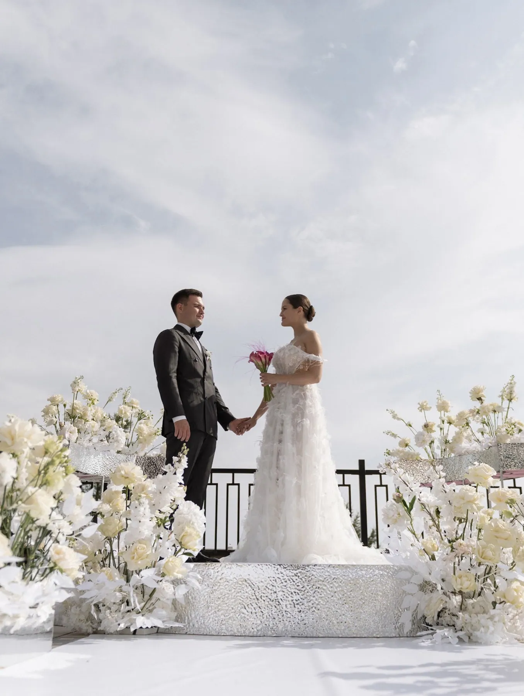
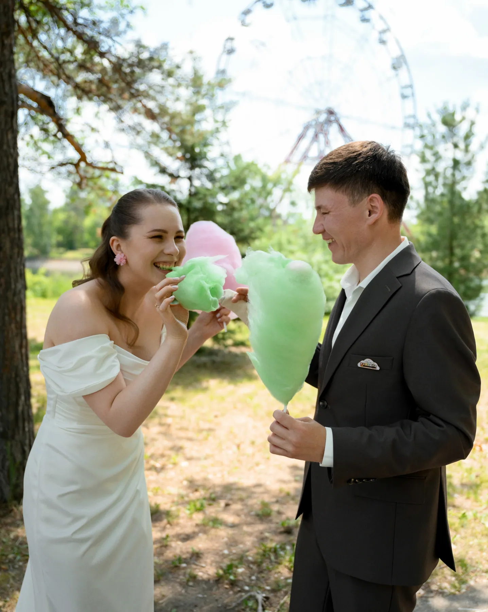
Хочется запомнить этот день по ощущениям, а не по списку задач? Мы рядом с первой идеи до последнего объятия.
ДАВАЙТЕ ОБСУДИМ →Можно устроить камерный ужин, выехать к Байкалу или собрать большую компанию. Главное — чтобы день отзывался именно вам.
Придумаем идею и соберём концепцию
Найдём площадку и вашу команду
Возьмём на себя детали и тайминг
Будем рядом в день свадьбы
За каждой свадьбой — свои люди, привычки и маленькие детали. Вот несколько историй, которые мы помогли воплотить.
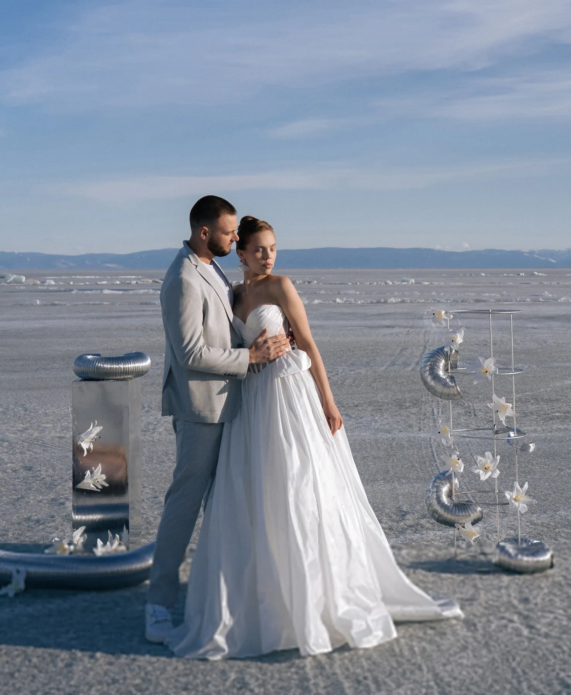
БАЙКАЛ / ЗИМАГена и Уля. Даже простой момент на льду становится целой историей.
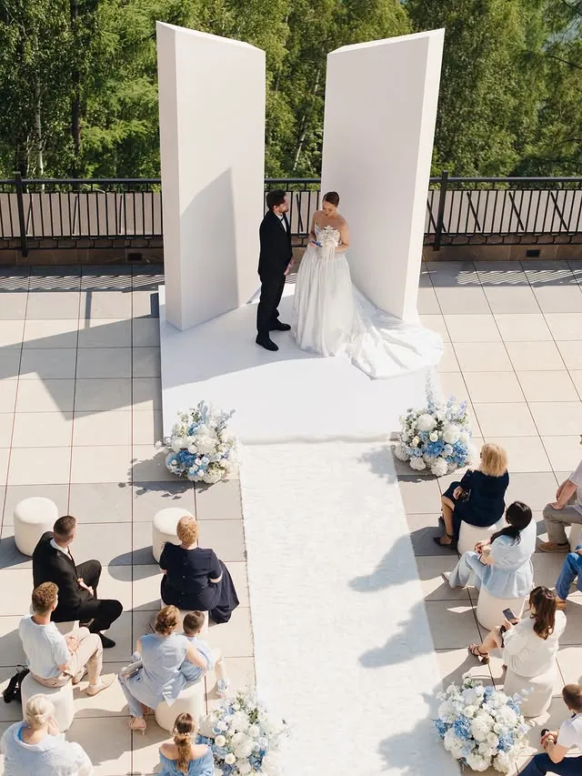
ЦЕРЕМОНИЯ / ДЕТАЛИСаша и Настя: книга об их любви, пожелания на печатной машинке и чайная церемония.
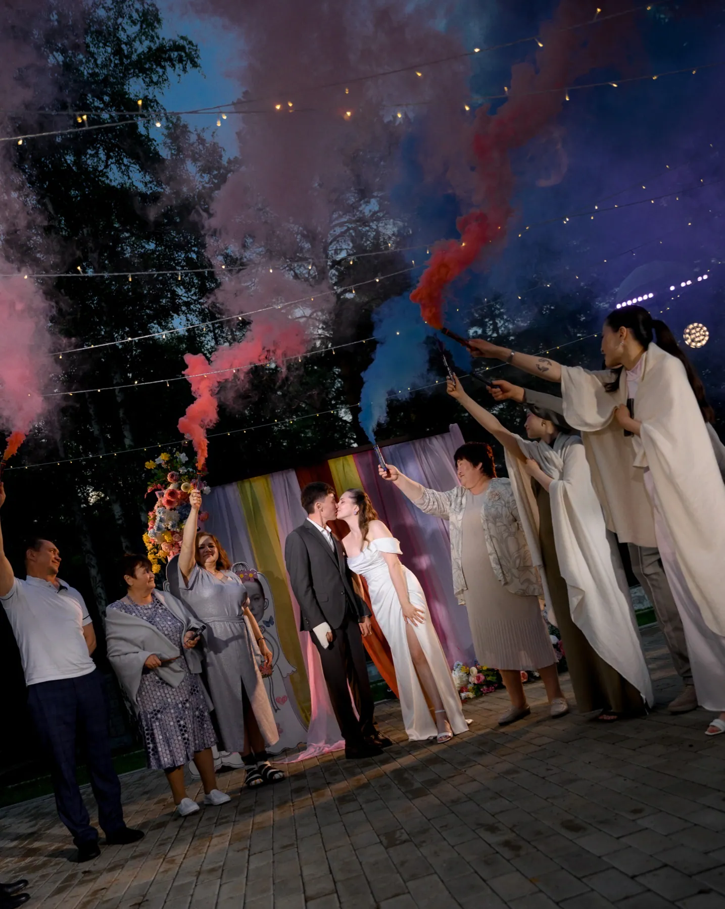
СВОЙ ФОРМАТ / ПРАЗДНИКПаша и Яна: фуршет, прогулки, игры и красивая церемония вместо привычного сценария.
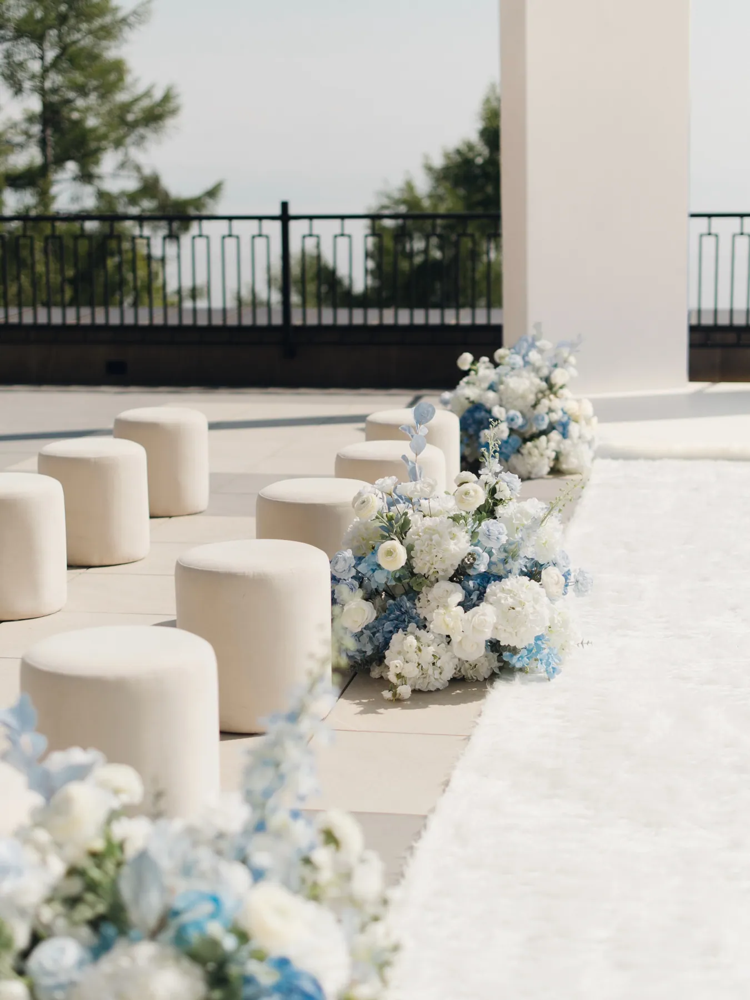
ДЕТАЛИ / АТМОСФЕРАЦветы, свет и пространство складываются в атмосферу вашего дня.
ЛИСТАЙТЕ СТРЕЛКАМИ ИЛИ ПРОВЕДИТЕ ПО КАРТОЧКАМ
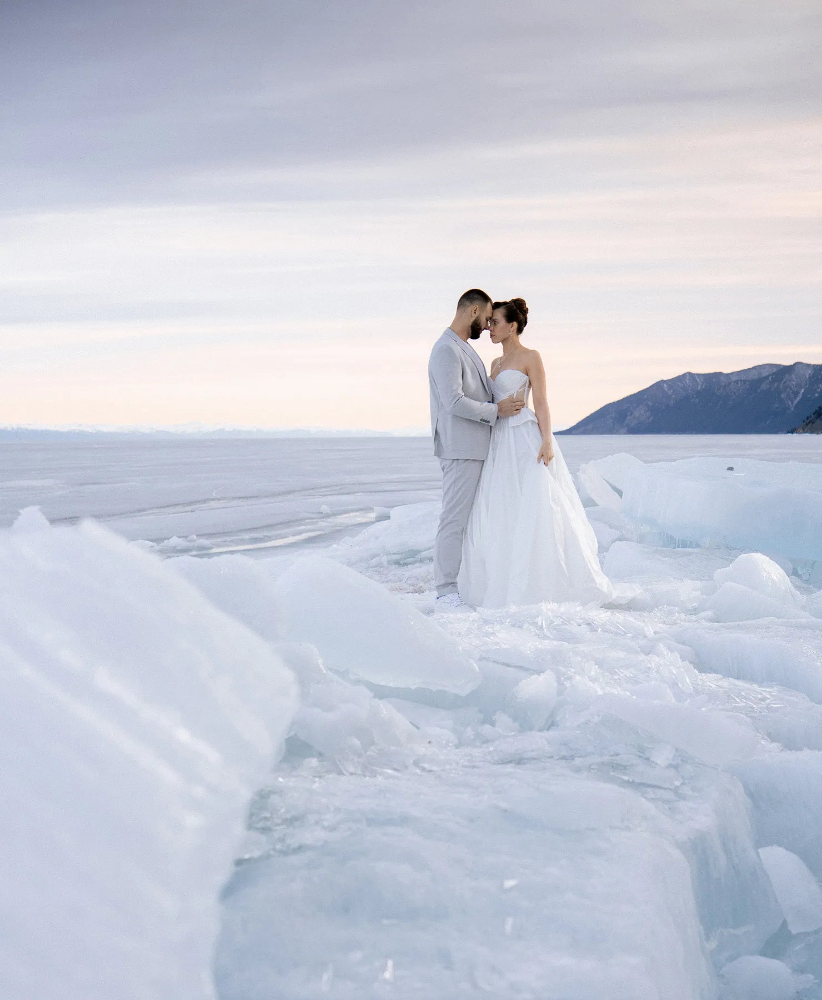
Прозрачный лёд, заснеженные скалы или летний берег — природа уже создала декорации. Мы поможем придумать свадьбу на Байкале, которая будет про вашу пару.
ХОЧУ НА БАЙКАЛ →ИРКУТСКАЯ ОБЛАСТЬ · ВЫЕЗДНЫЕ СВАДЬБЫВыберите настроение — покажем, с чего можно начать разговор. Никаких обязательных сценариев.
Церемония, прогулка и место, которое будет только вашим. Например, Байкал.
→Можно собрать день из церемонии, прогулки, фуршета, игр и встреч с любимыми людьми. Паша и Яна выбрали именно такой путь.
ПРИДУМАТЬ СВОЙ ФОРМАТ →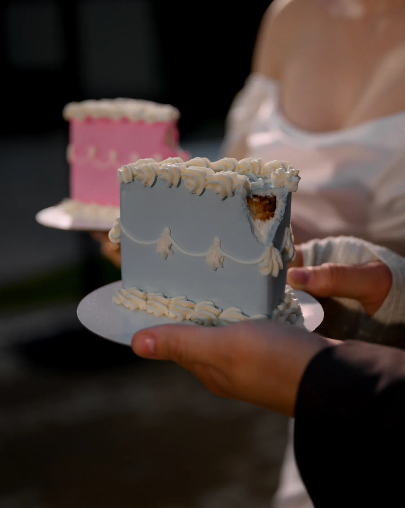
МАЛЕНЬКИЕ ДЕТАЛИ.Подготовка к свадьбе — это последовательность понятных шагов. Выбирайте этап и смотрите, что будем делать вместе.
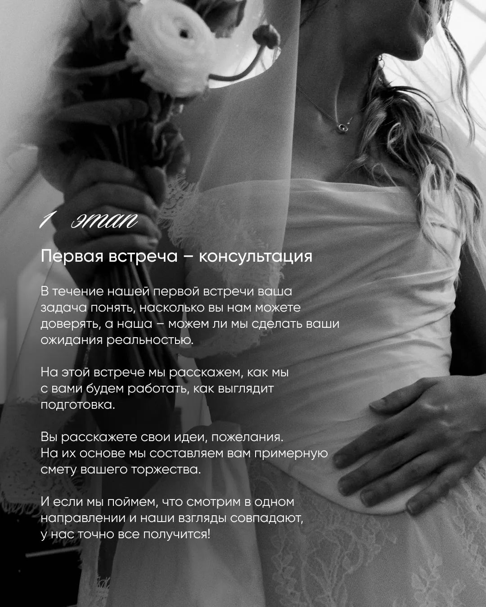
На бесплатной встрече поговорим о ваших желаниях, расскажем, как строится подготовка, и составим предварительную смету. Важно понять, совпадаем ли мы по взглядам.
ЗАПИСАТЬСЯ НА ВСТРЕЧУ →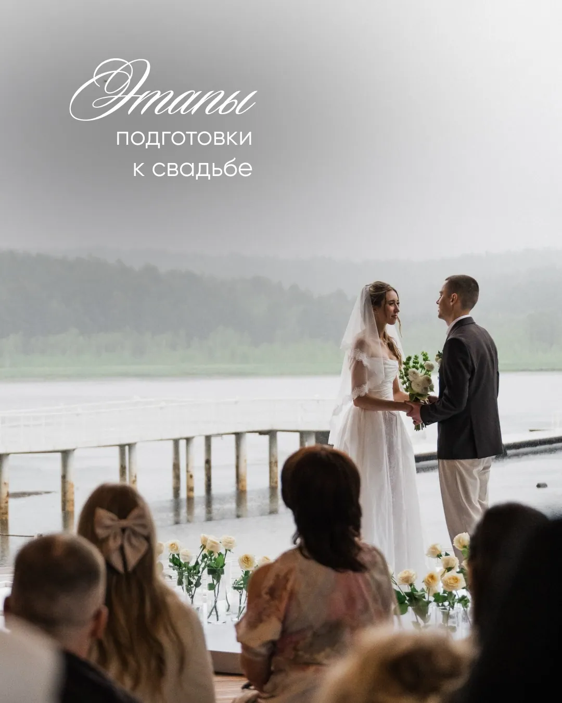
Каждая история начинается с разговора.
Первая консультация — бесплатно.
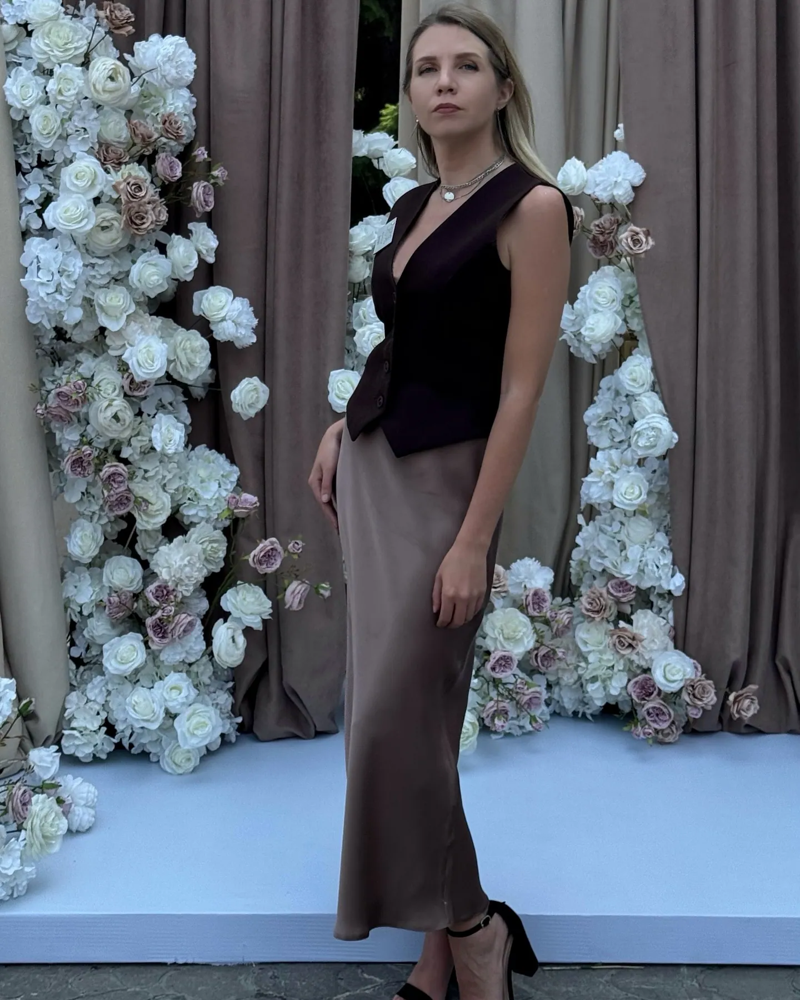
ДАРЬЯ ШУВАЛОВАСоздаю атмосферные свадьбы в Иркутске и на Байкале. Люблю, когда праздник отражает пару, а подготовка не превращается во вторую работу.
В своём блоге делюсь идеями, трендами и лайфхаками, которые помогают готовиться к свадьбе спокойнее.
БЛОГ ДАШИ →ДАША РАССКАЗЫВАЕТ
О НАС И НАШЕМ ПОДХОДЕ
Площадка, цветы, рассадка, гости и программа — всё складывается в одну историю. Мы держим её в фокусе, пока вы проживаете свой день.
ОБСУДИТЬ ДЕТАЛИ →Для популярных дат и летних свадеб хороший ориентир — начать подготовку за 9–12 месяцев. Будет больше вариантов площадок, фотографов и ведущих, а у вашей идеи — время обрести форму.
ОБСУДИТЬ ДАТУ →Сохраните этот список для разговора с организатором и обсудите то, что особенно важно вам.
Начинаем со знакомства, ваших историй и пожеланий. Обсуждаем формат, стиль и детали, чтобы праздник отражал именно вашу пару.
Помогаем выбрать площадку и предлагаем индивидуальную подборку специалистов с учётом вашего стиля, пожеланий и бюджета.
Для выездной церемонии важно заранее обсудить запасной вариант площадки и сценария с организатором.
Начинаем с предварительной сметы, затем согласовываем детали, план дня и работу команды. Нюансы обсуждаем на встрече.
Для популярных летних дат удобно начинать за 9–12 месяцев, но обсудить свадьбу можно на любом этапе.
Обсудите с организатором палитру, декор и полиграфию, а также возможность заранее увидеть мудборд или визуализацию.
Программа может включать welcome-зону, интерактивы и сюрпризы. Вместе обсудим, что подходит именно вашей паре и гостям.
Рассадка гостей и её согласование входят в обсуждение деталей подготовки.
Расскажите о гостях из других городов на встрече: варианты трансфера и проживания обсуждаются индивидуально.
Первая встреча бесплатная. Напишите нам в Instagram, чтобы договориться о времени.
Расскажите о вас и о дне, который вы хотите прожить. Начнём с бесплатной встречи и поймём, совпадаем ли мы.
НАПИСАТЬ В INSTAGRAM →